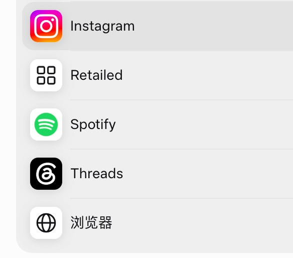

2026 年 11 月 2 日中午的一段群聊，核心结论是：muse 值得用的原因不是它本身，而是背靠 Meta 全家桶——能无缝连接 Instagram 和 Threads，把账号运营和内容营销直接串起来。
选 muse 的理由是 Meta 全家桶
Marvin 对比后更偏好 muse，理由很明确：它背靠 Meta 的全家桶。他的评价是「这 muse 可太好了」「无缝连接」——看重的不是单点能力，而是和 Meta 生态里 Instagram、Threads 这些账号体系的打通。

Threads 账号的门槛与 AI 打理
Marvin 提到 Threads 账号难注册、容易限流封号，用 muse 连接器来操作。小楼补充了更省事的路径：注册了 Instagram 就有 Threads，他自己的账号则交给 grok 打理。
让 Threads 给网站做宣传
小楼建议让 Threads 给网站做宣传，Marvin 回复已经宣传了，内容营销也安排上了。小楼进一步说，bsky 之类的平台也都可以注册起来，思路是把站外社媒账号铺开。
选词的影响：负面词起不来量
Marvin 最后把问题落回选词：选了一个负面词，不太容易起来量，有热度还是跟着之前蹭的。也就是说，社媒渠道铺开之后，词选错了仍然拿不到自然流量。
原始对话
原始对话共 15 条，按时间顺序保留 14 条，剔除 1 条纯表情消息。
聊天记录（14 条）
参与者 2 人：Marvin、小楼 · 时间范围 2026年11月2日 12:50 至 2026年11月2日 12:54 · 原始 15 条，保留 14 条，删除 1 条纯表情